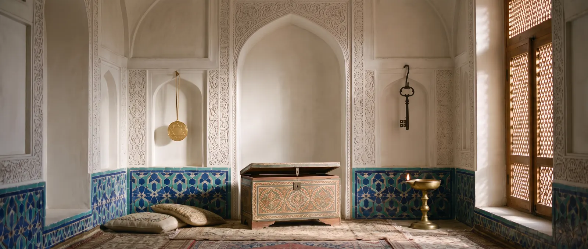

Ganjifa: the cards of the Timurids and Mughals
Round cards in eight suits, sent as gifts by Babur and banned by Shah Abbas II.

Ganjifa is the card game of Persia and India; its name is traced to the Persian ganj, treasure. The first known mention is by the Egyptian historian Ibn Taghribirdi (died 1470): the Mamluk sultan al-Mu’ayyad in his youth played “kanjifa” for money. The earliest Persian verses on it were written by Ahli Shirazi (died 1535): a quatrain for each of the 96 cards of an eight-suited pack.
Babur
The Timurid thread is Babur, Timur’s descendant in the fifth generation and founder of the Mughal empire. In the Baburnama, under the year 1527, he records sending a pack of ganjifa cards to Shah Hasan. Under the Mughals the game flourished: the “Mughal ganjifa” pack has 96 round cards in eight suits of 12, slaves, crowns, swords, red gold, harps, bills of exchange, white gold and cloth; each suit has ten pip cards and two court cards, the vizier and the shah. It is a trick-taking game, usually for three, and the king of the suit that leads changes from day to night.
At Timur’s own court cards are not attested: the first mentions come half a century after his death. In Persia Shah Abbas II (reigned 1642–1666) banned the game and it nearly vanished; in India hand-painted round cards are still made, above all in Odisha.